👑 Chử Đồng Tử 👑
Truyện Tranh Dân Gian Việt Nam
Truyện Tranh Dân Gian Việt Nam
🏰 Panel 1: Công chúa Tiên Dung

Vua Hùng Vương có công chúa Tiên Dung xinh đẹp như tiên, không chịu
lấy chồng, chỉ thích du ngoạn khắp nơi.
🏠 Panel 2: Cha con Chử Đồng Tử
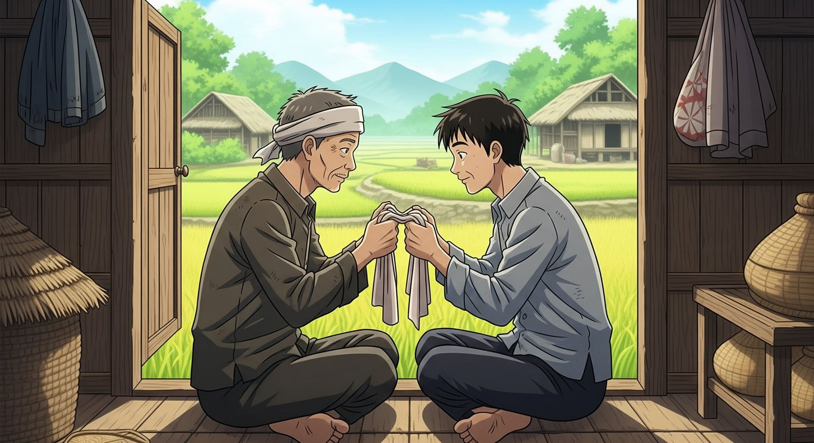
Ở làng Chử Xá, cha con Chử Cù Vân và Chử Đồng Tử nghèo khó, chỉ có
một chiếc khố duy nhất.
😢 Panel 3: Cha mất, con hiếu thảo
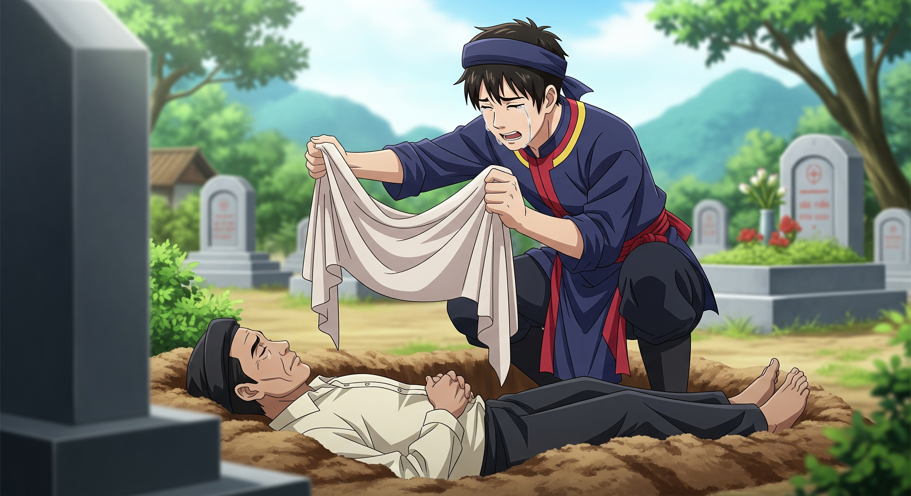
"Con không thể để cha chết trần truồng được!"
🐟 Panel 4: Đồng Tử câu cá ban đêm
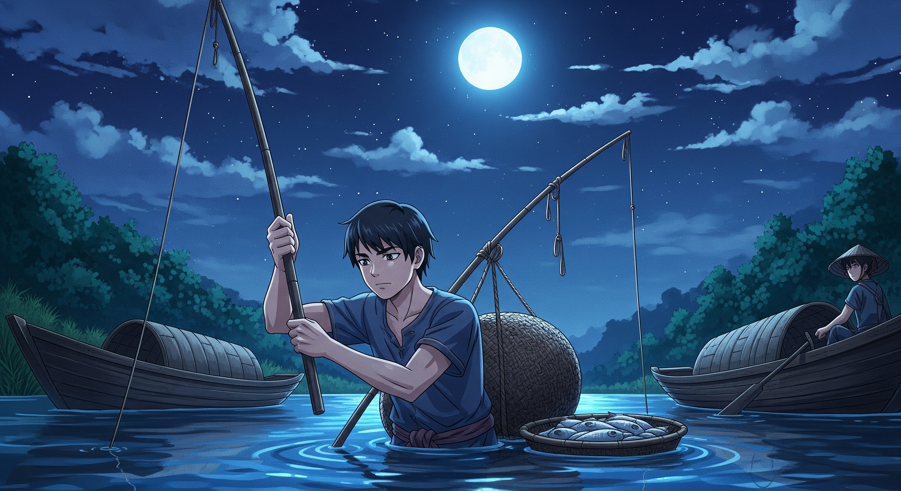
Ban ngày phải ẩn mình dưới nước, chỉ đêm mới dám ra câu cá...
🛥️ Panel 5: Thuyền rồng đến
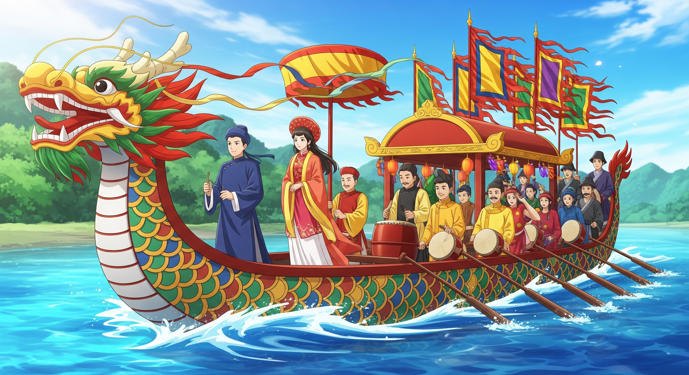
Thuyền rồng chở công chúa Tiên Dung ghé bờ. Nghe tiếng trống chiêng,
Đồng Tử hoảng sợ chui vào bụi lau.
🏖️ Panel 6: Nàng tắm, chàng lộ diện
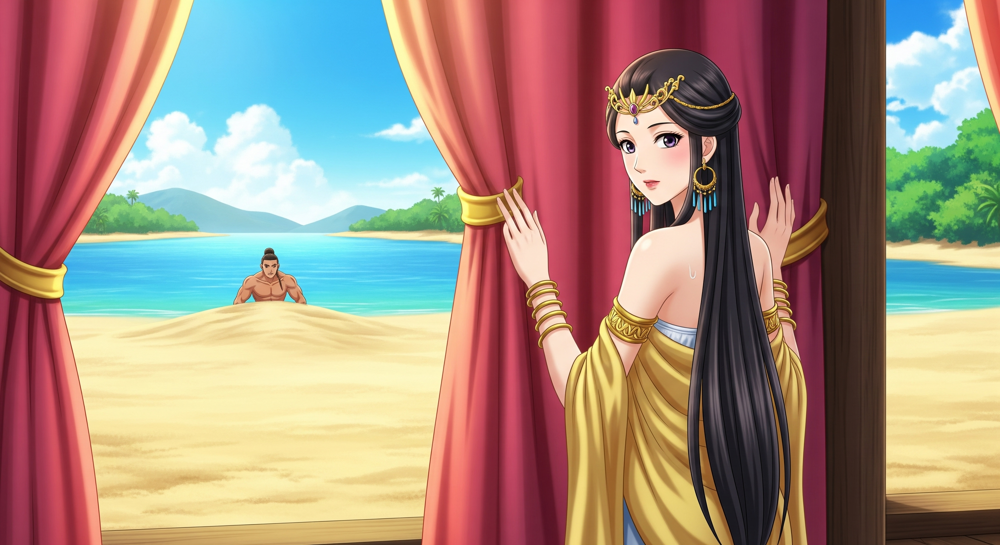
"Chàng là ai? Sao lại ẩn mình ở đây?"
💕 Panel 7: Duyên trời định
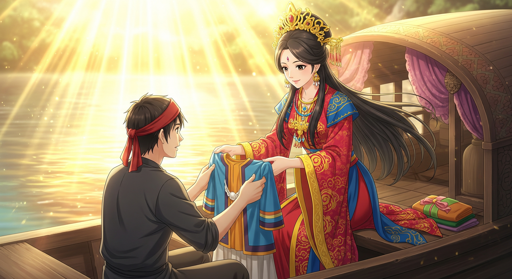
"Đây chắc là duyên trời định! Chàng hãy tắm rửa và mặc áo này!"
💒 Panel 8: Hôn l례ễ trên thuyền
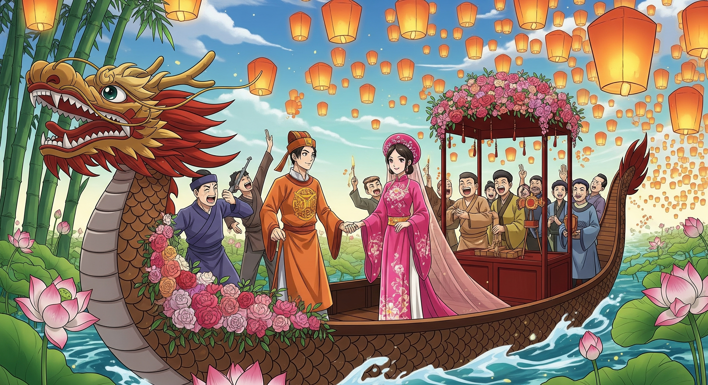
Hôn lễ cử hành ngay trên sông!
😤 Panel 9: Vua cha tức giận
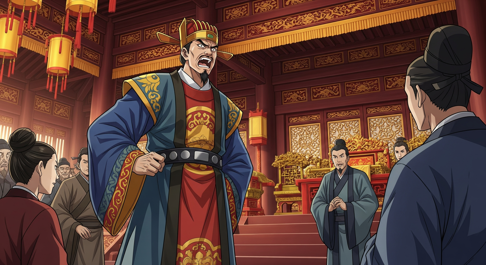
"Con gái ta hạ mình lấy kẻ nghèo hèn! Không được về cung nữa!"
🏪 Panel 10: Vợ chồng mở chợ
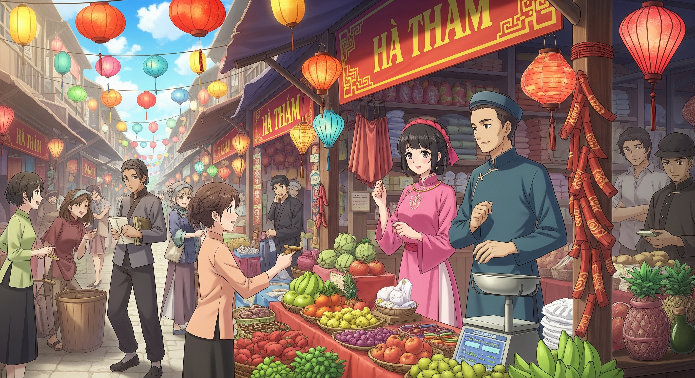
Tiên Dung cùng chồng mở chợ Hà Thám, buôn bán với dân gian, ngày
càng thịnh vượng.
⛰️ Panel 11: Gặp đạo sĩ Phật Quang
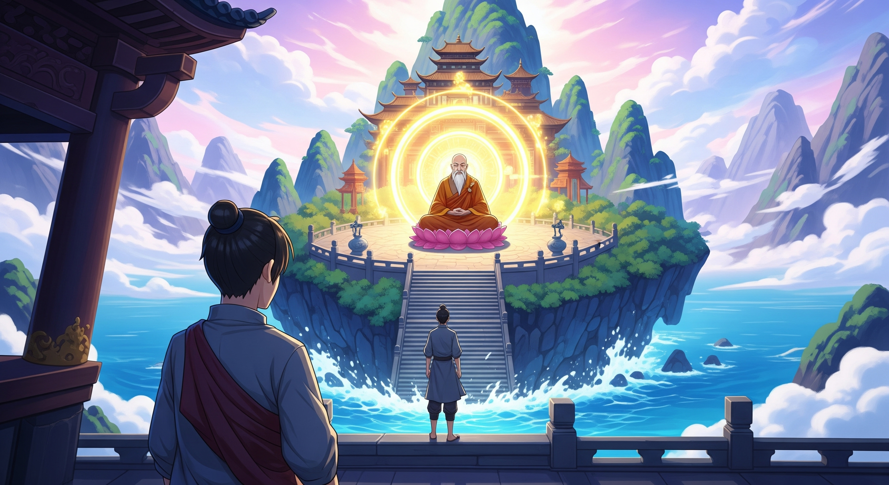
"Tôi sẽ dạy con về đạo. Hãy ở lại đây!"
🎁 Panel 12: Nhận vật thần thông
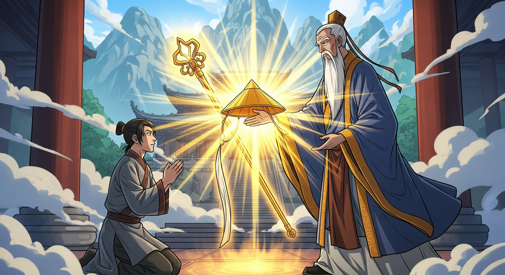
"Đây là gậy và nón thần thông. Hãy về dạy vợ con!"
🌙 Panel 13: Đêm nghỉ ngoài trời
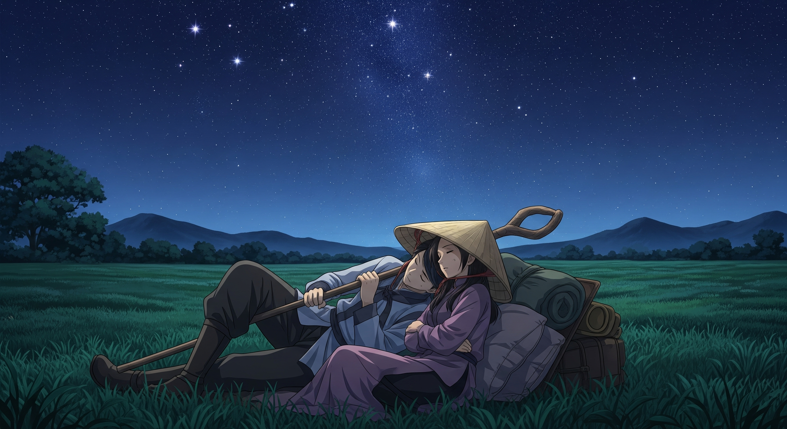
Hai vợ chồng đi tìm thầy, trời tối dừng nghỉ, dùng gậy làm gối, nón
che mình.
✨ Panel 14: Thành quách hiện ra
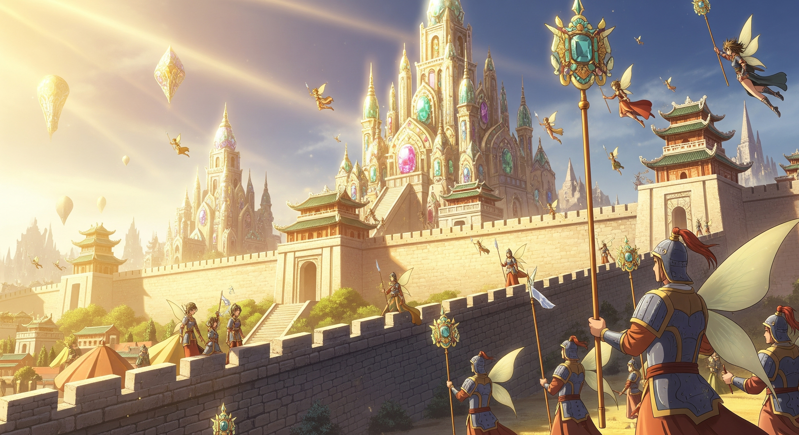
Thành quách, cung điện bằng châu ngọc hiện ra!
👥 Panel 15: Dân chúng thần phục
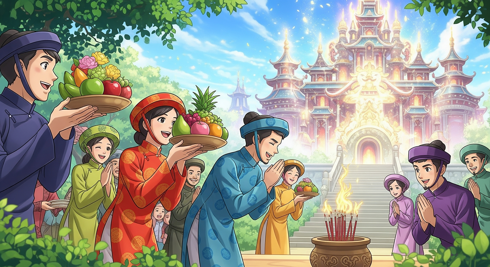
Dân quanh vùng kinh dị, mang hương hoa thực phẩm đến xin làm tôi tớ.
⚔️ Panel 16: Vua sai quân đánh
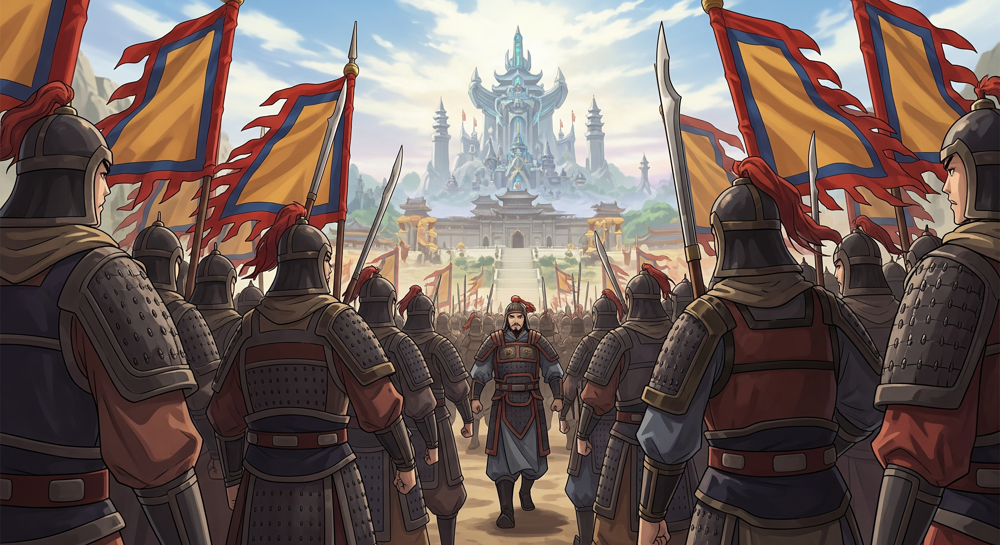
"Con gái ta làm loạn! Phái quân đi đánh!"
🕊️ Panel 17: Tiên Dung không chống cự

"Mọi việc đều do trời định. Ta không dám cự lại phụ vương!"
⛈️ Panel 18: Bão tố nổi lên
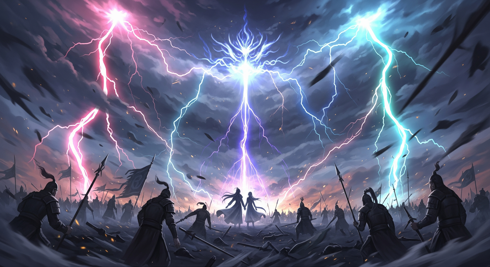
Trời nổi bão, quân vua rối loạn!
🌤️ Panel 19: Bay lên trời và hóa thành đầm
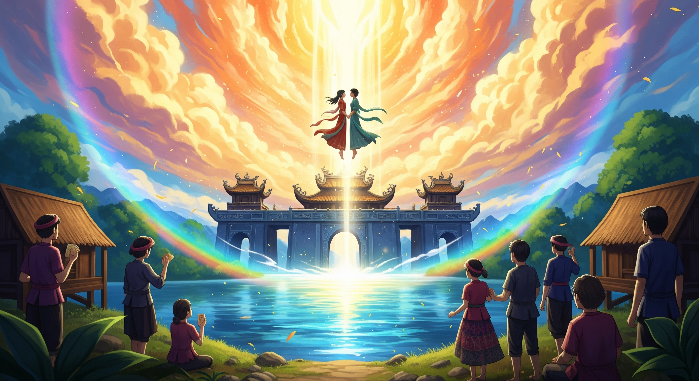
Trong chốc lát, thành quách cung điện và hai vợ chồng đều bay lên
trời. Chỗ đó hóa thành đầm Nhất Dạ.
🏛️ Panel 20: Đền thờ và di tích
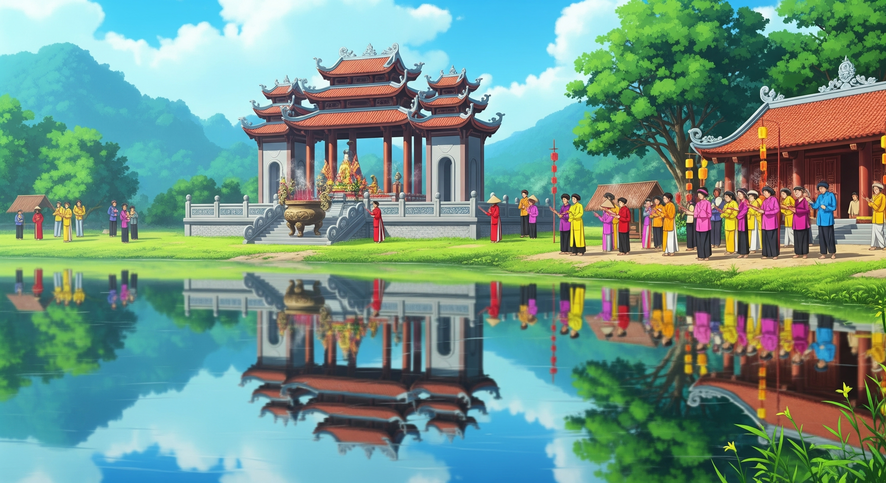
Dân chúng lập đền thờ để cúng tế hàng năm. Đầm Nhất Dạ thuộc phủ
Khoái Châu, tỉnh Hưng Yên ngày nay.
🎉 --- HẾT --- 🎉
✨ Bài học: Lòng hiếu thảo và tình yêu chân thành được trời phù hộ! ✨